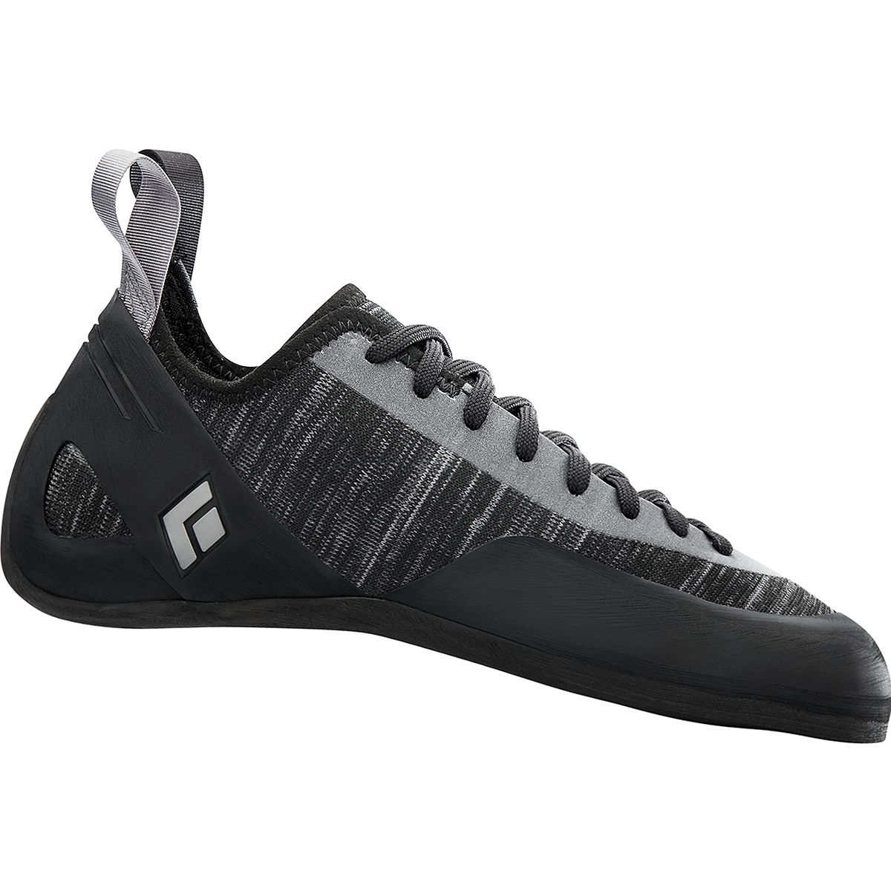
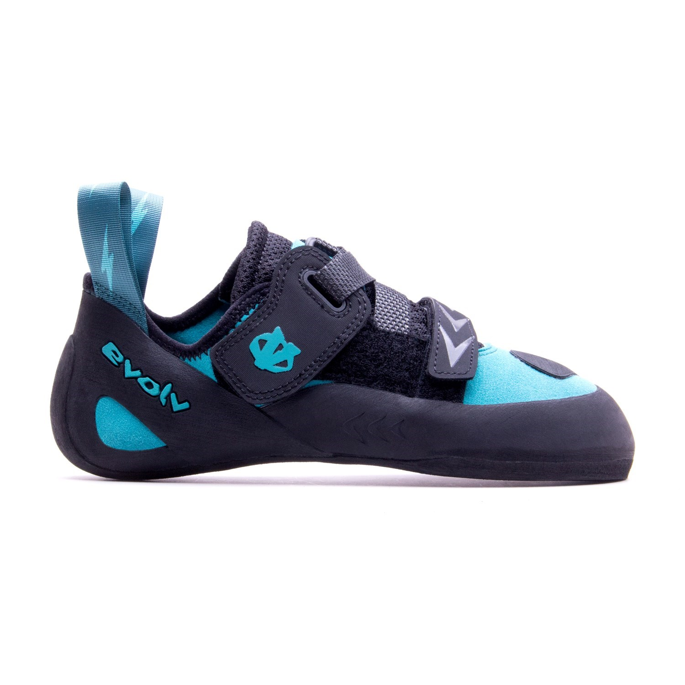
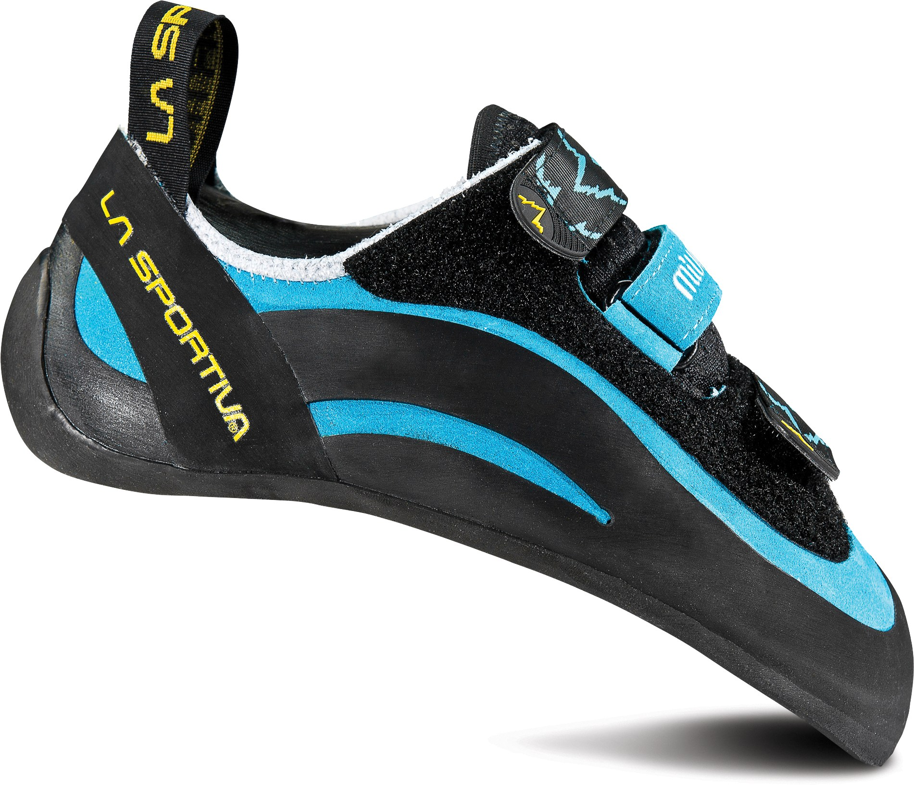

1 / 3

The best for both beginners and seasoned veterans (in some cases), neutral shoes have almost the same shape as regular street shoes.
With next to no curve toward the inside of the feet, nor any downward at the toes, these shoes are generally designed for all-day
comfort. This sort of design makes them good for beginners, who are not used to wearing climbing shoes, and for longtime enthusiasts
or professionals looking to spend a couple hours at a time sending. These shoes also tend to have the thickest soles out of the three
types, which is another boon to beginners, who should expect to slip off holds fairly commonly.
2 / 3

Moderate shoes are good for beginners as well, but are more geared toward the intermediate and experienced climber. These have a more
aggressive downturn at the toes, and some curve into the inside of the foot. These features make moderate shoes better to climb in.
The two curves focus power from the foot into the big toe, and the sole has also been whittled down for a better feel on the rock
These are probably the more common type of she you'll see in a climbing gym. They offer a good balance between comfort and prowess.
3 / 3
>
Creating the best grip and most nuanced feel, aggressive shoes are, well, aggressive. Don't worry, though; they won't bite! As the
nomenclature implies, the curves on these shoes are much harsher than on the previous two. On some aggressive shoes, the toe even looks
hooked! These things, coupled with some very thin soles, make aggressive shoes the ideal shoes for those looking for that extra n'th
percent on the wall or the rock. Oftentimes, people will have to take these shoes off between every climb, just so their feet aren't
screaming at them. You'll mostly see these on highly technical routes on boulders or bouldering walls, or even short lead or top-rope
climbs.
❮
❯